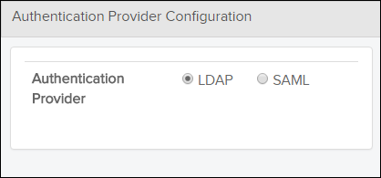
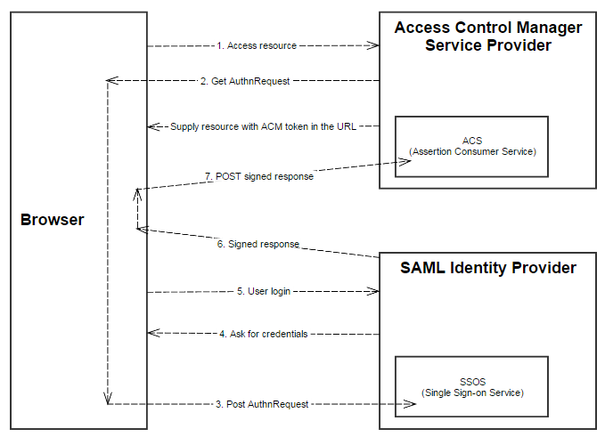

If your user role has Read permission for the
Configuration privilege, you can access the
Configuration page by clicking the  Configuration icon on the header bar.
Configuration icon on the header bar.
The Configuration page contains links to Permission Types, Authentication Provider Configuration, LDAP Configuration, SAML Configuration and Encryption. These panes are described in the sub-sections.
Permission Types
The Permission Types pane allows the administrator to create and maintain the permission types in Access Control Manager. The permission types becomes available in the Privileges page so that permissions for the various applications can be granted to user groups.

Permission Types
The table below describes the fields and buttons in the Permission Types pane.
| Component | Description |
|---|---|
| Add/Edit Permission Type fields | Fields for adding new or editing existing permission types. |
| Name field | The name of the permission type. |
| Scope field | The scope for which the permission type is used. Setting the scope means that
the permission will not be visible in privileges. This field is automatically set to Read&Sign for the Acknowledge permission type, as this is only used by the Read&Sign functionality in Pinpoint. Note: This field is currently not used
by any functionality other than Acknowledge.
|
| Permission Types list | List of existing permission types. When a permission type is selected, it appears in the Add/Edit Permission Type field so that you can modify it. |
| Click this icon if you want to create a new permission type. | |
| Click this icon to save a permission type. | |
| Click this icon to cancel add/edit of a permission type. | |
| Click this icon to delete a selected permission type. |
Authentication Provider Configuration
Users are not created within the Access Control Manager application itself, but managed via LDAP or SAML. The Authentication Provider Configuration pane allows you to choose whether to use LDAP or SAML for the user management. LDAP is the default option.

Authentication Provider Configuration
Choosing LDAP here means that the system will use the LDAP Configuration parameters, while the SAML option makes the system use the SAML Configuration parameters. The LDAP Configuration and SAML Configuration panes are described in detail below.
The selected option is written to the "authenticationprovider=" parameter in the configuration file acm_config.properties on the Access Control Manager server.
Example:
authenticationprovider=LDAP
LDAP Configuration
If the LDAP option is selected in the Authentication Provider Configuration pane, users and user groups are synchronized from an LDAP server. This could be an Active Directory (AD) Server, or a free alternative like OpenLDAP or Apache Directory. If users in the organization are categorized in appropriate user groups on the LDAP server, these groups can be transferred directly. If no appropriate groups exists you should create such groups on the LDAP server.
- The AD/LDAP synchronization process does not distinguish between groups and roles.
- A group in AD that does not exist in ACM already (as role or group) is created as a group in ACM.
- If an AD group exists in ACM as a role, it continues to be a role in ACM after the synchronization.
- If a group or role in ACM has the Synchronized with LDAP checkbox enabled, it is part of the synchronization.
- If such a group is not mentioned in the Group prefix list (LDAPSYNCH_GROUP_PREFIX) in the LDAP configuration section, it is deleted when the synchronization runs.

LDAP Configuration
The content added to the LDAP Configuration pane is written to a file called ldapconfig.properties, located in the application's config dir. The LDAP synchronization service reads the ldapconfig.properties in the config dir, and copies users and user groups from the configured LDAP server into Access Control Manager.
JAVA_OPTS="$JAVA_OPTS -Dcor.no.configdir=/work/tomcat8080/configdir"
The table below describes the fields and buttons in the LDAP Configuration pane. Mandatory fields are marked in bold and an asterisk.
| Component | Description |
|---|---|
| Click this icon to start the synchronization of users and user groups from the configured LDAP server. | |
 Save icon
Save icon |
Click this icon to save the LDAP Configuration form. |
 Edit icon
Edit icon |
Click this icon to make the LDAP Configuration editable. |
| Scheme mapping class field (Required) |
Set the scheme mapping class which is correct for your type of LDAP Server: if Active Directory: com.corena.acm.ldap.ActiveDirectorySchemeMap if OpenLDAP: com.corena.acm.ldap.CustomLDAPSchemeMap |
| Organization Mapping field | Set the property name used in the Active Directory that has the NCAGE value here. |
| Default organization field | All users must belong to an organization. When synchronizing with
LDAP, any new users are first associated with the organization selected with this
field. For details on changing the organization of users, refer to Change Organization for a User. Note: Set to (No organization) to
avoid resetting NCAGE for users not having 'o' property (Organization Mapping
property) set in the Active Directory.
|
| Start date field | The date for running the first synchronization. Select the date from the pop-up
calendar or enter the date with the following format: YYYY-MM-DD, for example
"2016-01-08". Note: This field is not required if you start the synchronization
manually using the
 button in the upper right corner. button in the upper right corner. |
| Start time field | The time for running the first synchronization. Enter the time with the
following format: HH:MM, for example 11:15. Note: This field is not required if you
start the synchronization manually using the
button in
the upper right corner. |
| Interval drop-down menu | The interval between each synchronization. Select the appropriate interval from
the drop-down list. Note: If you change the interval at a later time, the new setting
takes effect the next time a synchronization is performed.
|
| Base DN field (Required) | The top level of the LDAP directory tree is the base, referred to as the "base DN". All users and roles must be beneath the base DN, a typical base DN is: DC=your, DC=domain, DC=com |
| Group prefix field (Required) |
A group prefix is required. All the groups that you need to synchronize must be in the Group Prefix list. If you use the prefix BIKE, then all groups starting with BIKE will be transferred, for example BIKEViewer, BIKEAuthor, etc. You can also specify a comma separated list of group prefixes. i.e. BIKE, CAR, PLANE. All the members of all groups with names starting with one of the listed prefixes will be transferred, including any sub-groups. The following limitation applies: The user will not be transferred if the specified group is set as the primary group in AD for the user. |
| Secure LDAP field (Optional) | Check this to enable the use of the secure ldap (ldaps://) protocol when
communicating with the LDAP server (AD or OpenLDAP). Note: Enabling this requires the
configuration of a certificate to be used for the encrypted communication. The
setup must be done prior to enabling this checkbox.
|
| Server port field (Required) | Default LDAP server port is "389" Note: For Secure LDAP you would typically use
"636" as the port for AD.
|
| Server name FQDN field (Required) | The complete domain name for the LDAP server. |
| Context factory field (Required) | Use com.sun.jndi.ldap.LdapCtxFactory |
| Server authentication type field (Required) | Enter the authentication type used on your server, for example "DIGEST-MD5" or "Simple". |
| Username field (Required) | Enter the username for the LDAP server. |
| Password field (Required) | Enter the password for the LDAP server. Note: It is possible to encrypt the
password so that it is not available in clear text. For details, refer to Encrypt Passwords/User Names.
Note: Make sure that the password provided complies with the password
requirements given in the installation guide.
|
| Highest committed USN field | N/A. Note: The USN number is an attribute specific to Active Directory and this
field is populated when synchronization has been performed. This is a serial
number coming from AD after a successful synchronization. A synchronization will
include changes done in AD since the last recorded USN. When doing changes to the
ldap configuration you need to set this field to "0" in order to fetch users and
groups from AD. This field is not applicable for OpenLDAP.
|
| Last synchronization field | Non-editable field. Shows the date and time for the last synchronization. |
- LDAP_KEY_DEPARTMENT = department
- LDAP_KEY_GIVENNAME = givenName
- LDAP_KEY_SURNAME = sn
- LDAP_KEY_INITIALS = initials
- LDAP_KEY_EMAIL = email
- LDAP_KEY_DN = entryDN
- LDAP_KEY_USERID = cn
- LDAP_KEY_ROLEID = uid
- LDAP_KEY_MEMBER = uniqueMember
- LDAP_KEY_DESCRIPTION = description
- LDAP_CLASS_USER = inetOrgPerson
- LDAP_CLASS_ROLE = groupOfUniqueNames
- LDAP_KEY_PHONE = telephoneNumber
- LDAP_KEY_TITLE = title
An Active Directory server may require that the domain is entered as part of the username when the user is logging in to ACM ("domain\user" or "user@domain"). To avoid setting the domain name when logging in it is possible to insert a an optional parameter in the ldapconfig.properties file (located in the ACM config directory).
Example:
LDAP_DOMAIN_NAME=Flatirons
Following the example above, the user is not required to log in as Flatirons\[username] / [password], but can simply use [username] / [password].
Notice that if the LDAP_DOMAIN_NAME parameter is set it will be added to all usernames when logging in. If you have users in different domains you should not use this option.
Secure LDAP (LDAPS) Configuration
To enable the Secure LDAP option for the communication between ACM and the LDAP server it is necessary to do some configuration steps. The encrypted communication requires the setup of a certificate on both sides.
This is done similarly for the Active Directory and for the OpenLDAP. The only difference is how to obtain the certificate(s) to be imported into the Tomcat keystore where the ACM is running.
The instructions for the OpenLDAP below requires that your OpenLDAP server has been configured for LDAPS already. Refer to the Flatirons Access Control Installation Guide for an example of how that can be done.
- Export the certificate from AD. Obtain the certificate from your AD administrator. E.g., 'flatironssolutions.cer'
- Obtain the certificates from your OpenLDAP administrator. E.g., 'DigiCertCA.crt' and 'star_flatironssolutions_com_bundle.crt'
- Stop the Tomcat where the ACM is running.
- Execute the commands in a shell to import the certificates as follows:
- cd /apps/flatirons/acm/jre/lib/securityActive Directory:
- ../../bin/keytool -importcert -file "flatironssolutions.cer" -keystore cacerts -alias flatironssolutions -storepasswd changeit
OpenLDAP:- ../../bin/keytool -importcert -file "DigiCertCA.crt" -keystore cacerts -alias DigiCertCA -storepasswd changeit
- ../../bin/keytool -importcert -file "star_flatironssolutions_com_bundle.crt" -keystore cacerts -alias star_flatironssolutions_com_bundle -storepasswd changeit
- cd /apps/flatirons/acm/jre/lib/security
- Start the Tomcat again.
- Enable Secure LDAP
- Change the port according to your AD setup. Probably 636.
SAML Configuration
This pane allows the administrator to integrate the Access Control Manager with a SAML Identity Provider. If the SAML option is selected in the Authentication Provider Configuration pane, users will log in to the Access Control Manager application through the SAML login defined in the SAML Configuration pane.
Depending on the settings in the SAML Configuration, the user and the user group can be automatically created in Access Control Manager based on the information in the SAML login response.

SAML Configuration
The table below describes the fields and buttons in the SAML Configuration pane. Mandatory fields are marked in bold and an asterisk.
| Component | Description |
|---|---|
|
Edit icon |
Click this icon to make the SAML Configuration editable. |
|
Save icon |
Click this icon to save the SAML Configuration form. |
| SAML SSOS | The address to the SAML Identity Provider Single Sign on Service. |
| Create missing user group | Option to turn on or off automatic creation of user groups when the user logs in. If turned off it means that all the relevant SAML user groups must be created manually. |
| Keep existing User Group Memberships |
If the Keep existing User Group Memberships is set to False, when the ACM gets the SAML response with the user-groups then the ACM removes all the current user-groups in the ACM and only keeps the user-groups from SAML. If the Keep existing User Group Memberships is set to True, when the ACM gets the SAML response with the user-groups then the ACM keeps all the current user-groups in the ACM and also keeps the user-groups from SAML. Example: If a user is present and has membership to group1 and group2, then a SAML response comes in that contains the same user with group2 and group3.
|
| Username mapping | Name of the attribute that contains username/login/id. This is the username/login/if that the user will be registered with in ACM. |
| First Name mapping | Name of the attribute that contains first name. |
| Middle Name mapping | Name of the attribute that contains middle name. |
| Last Name mapping | Name of the attribute that contains last name. |
| Usergroup name mapping | Name of the attribute that contains the name of the user group that the user is a member of. |
| Email address mapping | Name of the attribute that contains e-mail address. |
| Phone number mapping | Name of the attribute that contains phone number. |
| Organization name mapping | Name of the attribute that contains the organization name. Note: Be aware that
organization/company names that are present in the SAML response must exist in
ACM.
|
| Department mapping | Name of the attribute that contains the department name. |
| Title mapping | Name of the attribute that contains user title |
| Add User to groups only on | This setting determines when users are added to groups when logging in. An ACM
admin user can configure this value or set it in the UI. To configure the
value:
To set the value in the UI:
|
| Trusted certificates | Use the buttons described below to add, edit or delete certificates in this field. The certificates that are registered here are the only certificates that ACM will trust. All certificates which the Identity Provider uses to sign responses and/or assertions must be registered here. |
|
Click this button to edit a certificate. |
 |
Click this button to add a new certificate. |
 |
Click this button to delete a certificate. |
- samlconfig.properties: Points to the SAML Identity Provider's
single sign on service (SAML SSOS). The mapping fields are used to get properties from
the SAML response sent by the Identity Provider. The values should be equal to the
corresponding attributes in the response.
Example response from the Identity Provider:
<saml:Attribute Name="Email" NameFormat="urn:oasis:names:tc:SAML:2.0:attrname-format:basic"> <saml:AttributeValue xsi:type="xs:string" xmlns:xs="http://www.w3.org/2001/XMLSchema" xmlns:xsi="http://www.w3.org/2001/XMLSchema-instance">test@test.com</saml:AttributeValue> </saml:Attribute>
Since the name of the attribute in the above example is "Email", you must fill the same value in Email address mapping field. This will populate the samlconfig.properties file with this parameter:
emailmapping=Email
- idp_saml_certificates.json: Contains the certificate(s) which the Identity Provider uses to sign its responses. This file is edited in the Trusted certificates field.
Be aware that the preprocess_SAML_response.xsl is added by the installer when you select the SAML option, it is not default present in the config directory. It will also be added if you are switching from LDAP to SAML manually in the Authentication Provider Configuration page (if not already present).
For more information about this and customization support, please contact Flatirons.In addition to the two files above, a sp_saml.pem (RSA Private Key file) and a sp_saml.crt (Certificate file) must be generated and added to the configdir in order for SAML to work. If SAML is chosen during installation of ACM, these files are generated. If you have installed ACM with the LDAP option and later decide to switch to SAML you will need to create the files manually using OpenSSL.
Below you can see command line examples (Windows/Linux) for generating these files using OpenSSL:
Windows:
[installdir]\dist\openssl req -newkey rsa:2048 -new -x509 -days 3652 -nodes -out [installdir]\configdir\sp_saml.crt -keyout [installdir]\configdir\sp_saml.pem -config [installdir]\dist\openssl\openssl.cnf -subj "/C=US /ST=Colorado /L=Boulder /O=Flatirons /OU=RandD /CN=www.flatironssolutions.com"
Linux:
openssl req -newkey rsa:2048 -new -x509 -days 3652 -nodes -out [installdir]/configdir/sp_saml.crt -keyout [installdir]/configdir/sp_saml.pem -subj "/C=US /ST=Colorado /L=Boulder /O=Flatirons /OU=RandD /CN=www.flatironssolutions.com"
ACM SAML metadata is needed to register ACM with the SAML IDP service. The following REST endpoint can be used to retrieve the ACM SAML metadata: <acm-api-ur/saml>, for example "http://localhost:9091/acmserver/api/saml". Which metadata is needed depends on the SAML IDP service installed, but the metadata should always contain enough information.
The picture below explains how ACM SP interacts with the SAML IDP:

SAML Flow
Encryption
The Encryption page offers a quick way of encrypting strings, like the LDAP password or the passwords used for communication between Access Control Manager, Data Manager, Pinpoint Viewer and other applications. It can take any input string and encrypt it with both RSA and Jasypt methods.

Encryption Page
| Component | Description |
|---|---|
| Input string field | The string to be encrypted. |
 Encrypt string icon
Encrypt string icon |
Click this icon to start encryption. |
| RSA field | The String encrypted with RSA method. |
| Jasypt field | The string encrypted with Jasypt method. |
 Copy to clipboard icon
Copy to clipboard icon |
Click this icon to copy an encrypted string to the clipboard. |